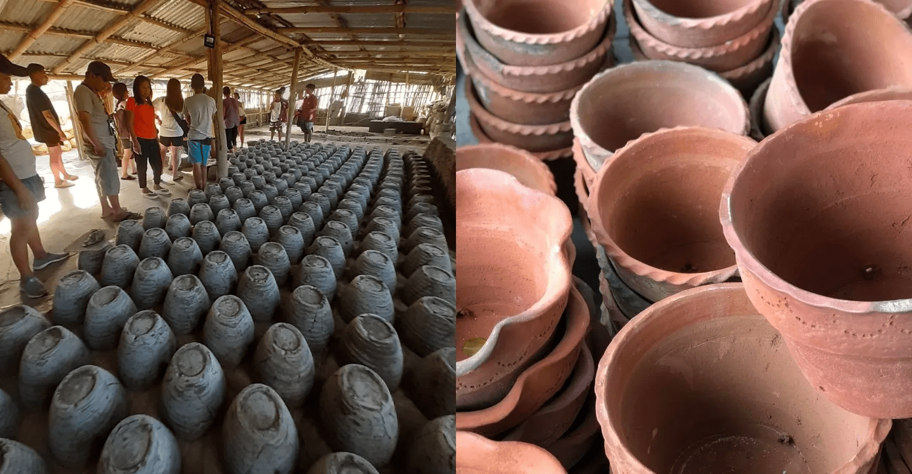

Rangcapan Pottery
Like any other province, San Nicolas, Ilocos Norte's signature craft is the damili, and Rangcapan Pottery is one of the best destinations in Ilocos Norte to know about this craft. Rangcapan Pottery is one of the town’s iconic damili-making establishments, as they produce exceptional damilis using precise cooking methods, innovative molding techniques, and an excellent choice of clay.